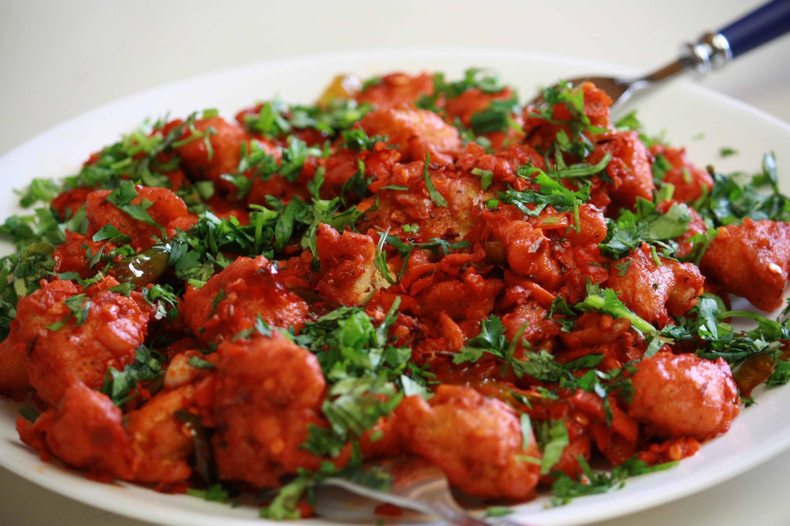
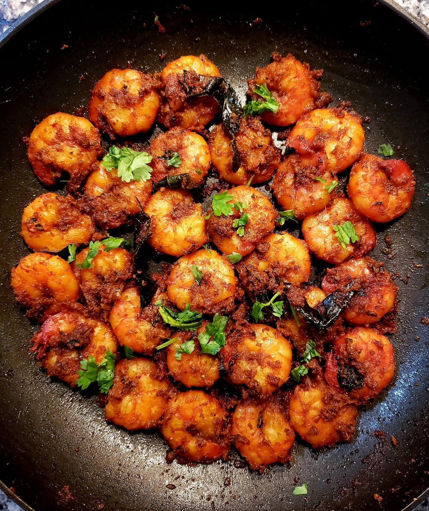
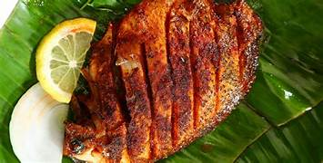
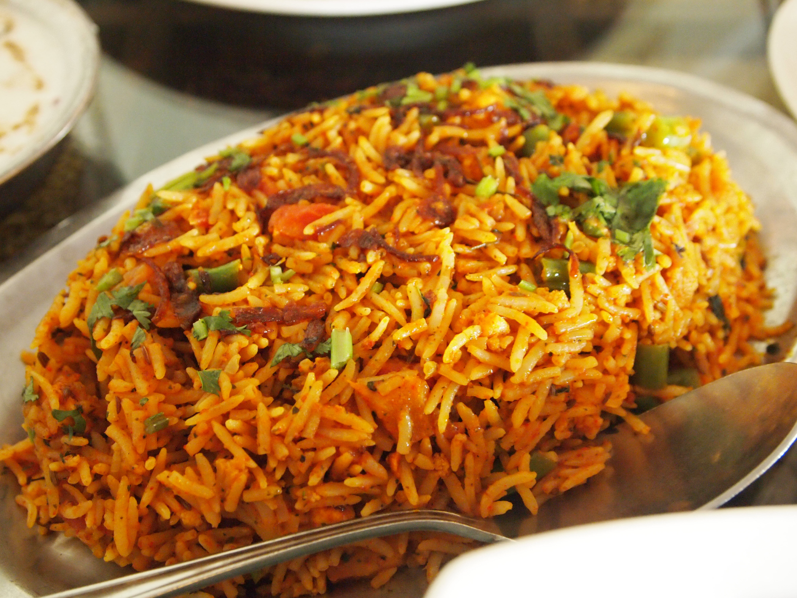
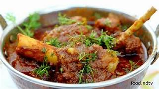
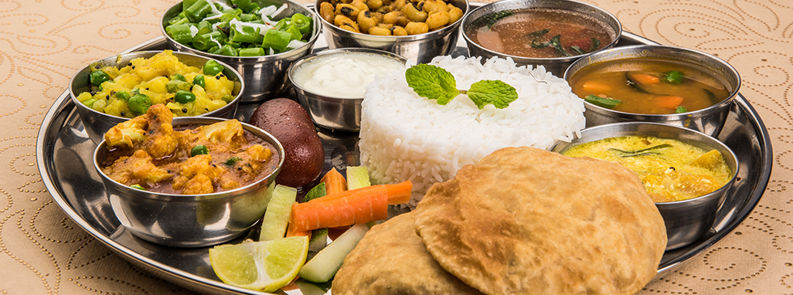
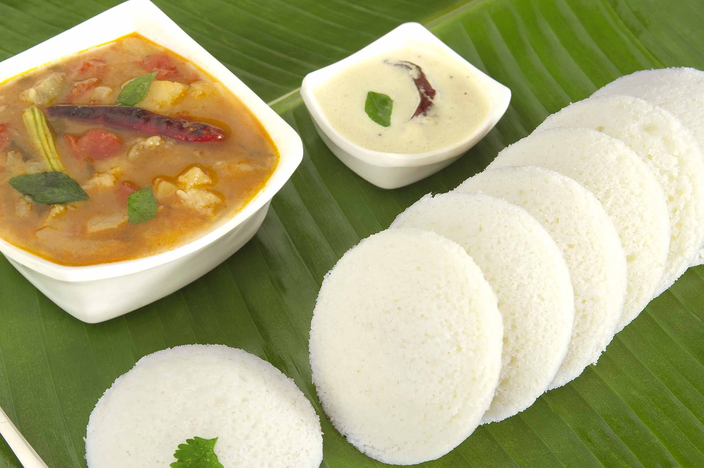

Starters
Chicken Manchurian
Chicken Manchurian is a popular Indo-Chinese dish that's loved for its flavorful and tangy taste. It's a starter dish made with marinated chicken pieces that are deep-fried and then tossed in a spicy and tangy Manchurian sauce.
Prawns Fry
Prawn fry is a flavorful and delicious dish made with marinated prawns that are shallow or deep-fried until golden and crispy.
Fish Fry
Fish fry is a popular dish enjoyed in many cuisines around the world. It involves coating fish pieces with a seasoned mixture and frying them until golden and crispy.
Main Course
Biryani
Hyderabadi Biryani is a famous and flavorful variety of biryani that originates from the city of Hyderabad in India. It's known for its aromatic spices, tender meat (usually chicken or mutton), and long-grain Basmati rice cooked to perfection.
Mutton Curry
Mutton curry is a delicious and flavorful dish made with tender pieces of mutton (goat meat) cooked in a spicy and aromatic gravy.
Thali
It is a mixed food item where all the items like rice, chapathi, curries, chutneys, etc are included.
Tiffins
Idli
Idli is a popular and traditional South Indian dish that's enjoyed as a breakfast item or snack. It is a type of steamed rice cake made from fermented rice and black lentils (urad dal). Idlis are light, fluffy, and have a slightly sour taste due to fermentation.
Vada

Vada is a popular South Indian snack made from a batter consisting mainly of soaked and ground urad dal (black gram lentils) along with spices.